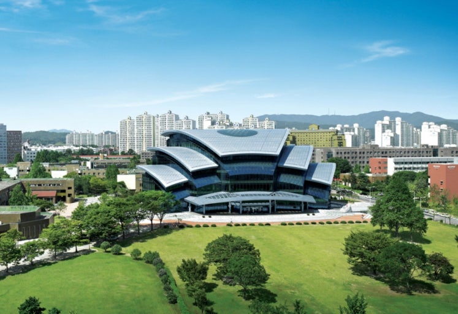

수시 지원의 출발점은 대학마다 다른 전형 구조를 정확히 아는 것입니다. 오늘은 학생부종합의 비중이 매우 큰 대학, 성균관대학교의 수시 전형과 대표 학과, 그리고 이번 수시를 어떻게 준비하면 좋은지 정리했습니다.
성균관대 수시, 어떤 전형이 있나요
성균관대 수시는 학생부종합의 비중이 가장 크고, 학생부교과(학교장추천), 논술우수, 실기(예체능)로 구성됩니다. 특히 학생부종합은 성격이 다른 네 갈래로 운영됩니다.
- 학생부종합 — 융합형 : 인문·자연 계열 단위로 모집하며 서류(학생부) 100% 일괄 선발, 수능최저 미적용입니다. 폭넓은 학업 역량과 계열 적합성을 봅니다.
- 학생부종합 — 탐구형 : 학과(모집단위) 단위로 모집하며 서류 100% 일괄, 수능최저 미적용입니다. 지원 학과와 연결된 탐구 경험의 깊이가 핵심입니다.
- 학생부종합 — 성균인재(2026 신설, 인문사회 면접형) : 1단계 서류 100%(다배수) → 2단계 서류 70% + 면접 30%, 수능최저 미적용입니다.
- 학생부종합 — 과학인재(자연·공학 면접형) : 1단계 서류 100% → 2단계 서류 70% + 면접 30%, 수능최저 미적용입니다.
- 학생부교과 — 학교장추천 : 교과 100% 일괄, 수능최저 적용이며 고교별 추천 인원 제한이 있습니다. 반영교과는 A군(국·수·영·사·과)과 B군(기술가정·제2외국어·한문)을 가중 반영합니다.
- 논술우수 : 논술 100% 일괄, 수능최저 적용이며 계열에 따라 언어형·수리형으로 구분해 출제합니다.
- 실기(예체능) : 영상학과·스포츠과학과·무용학과·연기예술학과 등에서 서류·면접·실기를 단계별로 반영합니다.
정리하면 내신이 강하면 학교장추천, 학업·탐구 스토리가 강하면 융합형·탐구형·성균인재·과학인재, 수능·논술이 강하면 논술우수로 방향을 잡습니다. "성균관대 수시등급" 합격선은 전형·모집단위별로 크게 다르므로 반드시 당해 연도 입시결과(입결)를 확인하세요.
성균관대 대표 학과·모집단위 (키워드)
성균관대는 인문사회과학캠퍼스(서울 명륜)와 자연과학캠퍼스(수원 율전)로 나뉩니다. 대표 모집단위는 다음과 같습니다.
- 인문·사회 — 인문과학계열, 사회과학계열, 국어국문학, 영어영문학, 프랑스어문학, 중어중문학, 독어독문학, 러시아어문학, 한문학, 사학, 철학, 문헌정보학, 유학·동양학, 행정학, 정치외교학, 사회학, 사회복지학, 심리학, 미디어커뮤니케이션학, 소비자학, 아동·청소년학, 통계학, 경제학
- 글로벌·경영 — 글로벌리더학부, 글로벌경제학과, 글로벌경영학과, 경영학과
- 사범·교육 — 교육학과, 한문교육과, 수학교육과, 컴퓨터교육과
- 자연·공학 — 자연과학계열, 공학계열, 생명과학과, 수학과, 물리학과, 화학과, 전자전기공학부, 소프트웨어학과, 지능형소프트웨어학과, 반도체시스템공학과, 반도체융합공학과, 배터리학과, 건설환경공학부, 기계공학부, 화학공학·고분자공학부, 신소재공학부, 시스템경영공학과, 나노공학과, 건축학과, 글로벌바이오메디컬공학과, 식품생명공학과, 융합생명공학과, 바이오메카트로닉스학과
- 융합·자유전공 — 글로벌융합학부(데이터사이언스·인공지능·컬처앤테크놀로지 등), 자유전공계열
- 의약·특성 — 의예과, 약학과, 바이오신약·규제과학과
- 예체능 — 스포츠과학과, 미술학과, 디자인학과, 의상학과, 무용학과, 연기예술학과, 영상학과
특히 반도체시스템공학과·지능형소프트웨어학과·배터리학과 등은 대기업과 연계된 채용조건형 계약학과로 인기가 높아, 지원 시 수학·과학 심화와 진로 연계 활동이 중요합니다.
이번 수시, 성균관대는 이렇게 준비하세요
성균관대 수시를 노린다면 아래 순서로 전략을 세우는 것을 권합니다.
- 1) 계열이냐 학과냐 먼저 결정 — 융합형은 계열 단위, 탐구형은 학과 단위 모집입니다. 진로가 뚜렷하면 탐구형, 폭넓게 탐색 중이면 융합형이 유리할 수 있습니다.
- 2) 수능최저 여부 점검 — 학교장추천·논술은 수능최저를 적용합니다. 최저 과목을 방학 동안 집중 관리하세요. 학생부종합 4개 전형은 최저가 없어 서류·면접에 집중할 수 있습니다.
- 3) 탐구·활동을 모집단위와 연결 — 지원 계열·학과와 이어지는 독서·탐구·활동을 정리해 두세요. 특히 반도체·소프트웨어 등 계약학과는 진로 동기가 뚜렷해야 합니다.
- 4) 면접 대비 — 성균인재·과학인재의 2단계 면접 30%는 결코 작지 않습니다. 서류 기반 질문에 자기 언어로 답하는 연습이 필요합니다.
성균관대는 어떤 학교인가요
성균관대학교는 1398년 성균관에 연원을 둔 국내 최고(最古) 전통의 명문 사립대학으로, 인문사회과학캠퍼스(서울 명륜)와 자연과학캠퍼스(수원 율전) 이원 체제로 운영됩니다. 삼성과의 산학협력을 기반으로 반도체시스템공학과·지능형소프트웨어학과·배터리학과 등 채용조건형 계약학과와 의예·약학 등 경쟁력 있는 모집단위를 두고 있습니다. 수시에서 학생부종합 전형의 비중이 매우 크고, 계열·학과 단위 모집과 면접형·서류형이 병존하는 것이 특징입니다.
※ 모집 인원·수능최저·전형 일정 등 세부 사항은 해마다 달라질 수 있습니다. 지원 전 반드시 성균관대학교 입학처 모집요강에서 최종 확인하세요. 본 글은 학부모·학생의 이해를 돕기 위한 정리 자료입니다.